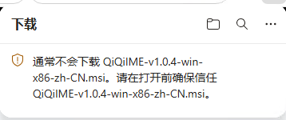
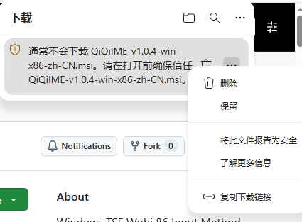
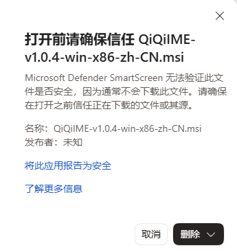
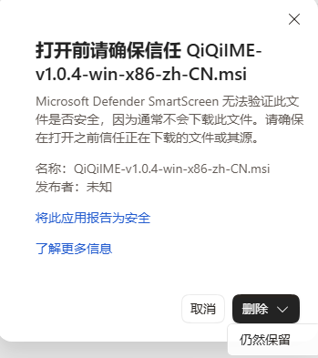

64 位 Windows · x64
Windows 11 x64 / Windows 10 22H2 x64，已包含对 32 位应用的支持。
DOWNLOAD & INSTALL
推荐使用官方 MSI 安装包。安装程序会完成安装与输入法添加，无需手动运行部署脚本。
点击后前往 GitHub 下载。安装文件托管于 Releases，不在本站重复存放。
LATEST STABLE
正在读取快捷下载信息，也可使用上方官方发布页。
01 / CHOOSE YOUR PACKAGE
| 你的系统 | 安装包文件名包含 |
|---|---|
| Windows 11 x64 | win-x64 |
| Windows 10 22H2 x64 | win-x64 |
| Windows 10 22H2 x86 （32 位） | win-x86 |
64 位 Windows 只需安装 x64 MSI，已包含对 32 位应用的支持。目前没有原生 ARM64 安装包。不确定位数时，查看「设置 → 系统 → 系统信息（关于）→ 系统类型」。
中文安装界面选以 zh-CN.msi 结尾的文件，英文安装界面选 en-US.msi；这不影响中文输入。普通用户不需要 Source code、符号包或 ZIP。
02 / GET STARTED
打开最新正式版页面，展开 Assets（附件），选择匹配架构与界面语言的 MSI，并阅读本次发布说明。
双击 MSI，按提示确认管理员权限。标准账户可能需要管理员协助；安装完成后不要移动或直接删除程序目录。
重新打开记事本并点击输入区域，按 Win + Space，选择「QiQi 五笔 86」。
确认处于中文模式，输入 wqiy 试试“你”。默认按 Shift 切换中英文；设置与词典管理器可在开始菜单搜索“奇奇五笔”或“QiQiIME”打开。
03 / KEEP YOUR DATA
先用词典管理器备份词库和设置，保存工作，切换到其他输入法并关闭相关应用，再运行新版 MSI。重新打开应用后仍为旧版时，注销或重启。
通过 Windows「设置 → 应用」卸载。默认保留个人数据；部分版本提供默认不勾选的数据清理选项，请备份后再决定。自定义路径和备份不在清理范围内。
04 / A LITTLE HELP
信誉提示不等于已检测到病毒，也不能证明文件安全。先核对官方来源和文件名；不要关闭防病毒软件或 SmartScreen。遇到恶意软件告警、校验不一致或组织策略限制时停止安装，详细处理方法见完整安装指南。
若 Edge 提示“通常不会下载”，仅在确认信任官方文件且没有恶意软件告警时，才考虑按以下图示继续。截图使用旧版中文 Edge 和旧版安装包，仅作界面示意；请从 Releases 下载当前版本，不要照图中的版本号下载。




先重新打开应用。再到 Windows 语言设置中检查「中文（简体，中国）」的键盘，按需添加奇奇五笔。若由其他管理员代为安装，当前账户也可能需要单独添加；必要时保存工作后注销或重启。
先确认已选中奇奇五笔，再按 Shift 切到中文模式。识别到密码或 PIN 输入框时会临时使用英文；识别依赖宿主应用，特殊输入框未被识别时请手动切换。
可以，但 ZIP 不是解压即用的绿色版，需要注册并保留固定程序目录。不要与 MSI 安装混用，也不要用 ZIP 脚本卸载 MSI 版本。请按完整指南操作。